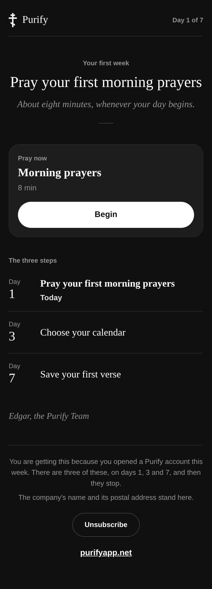
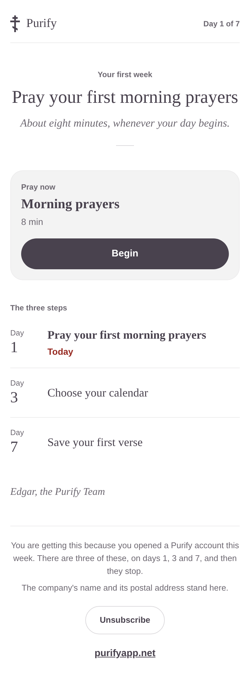
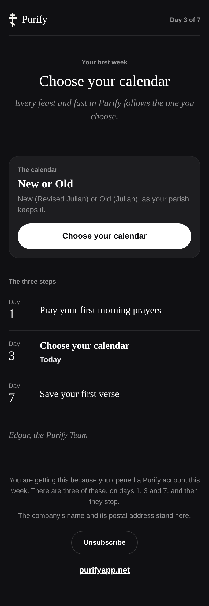
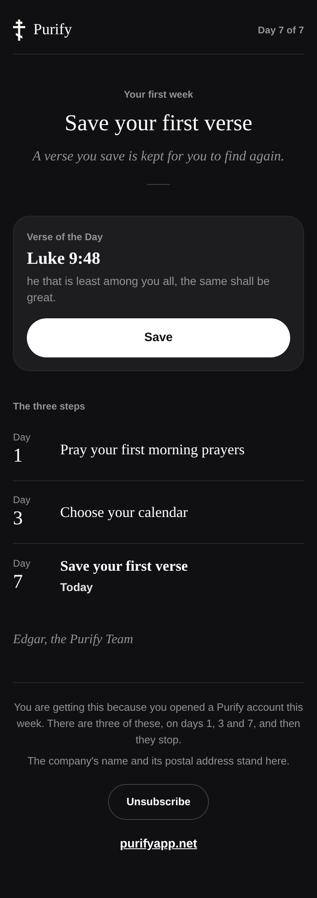
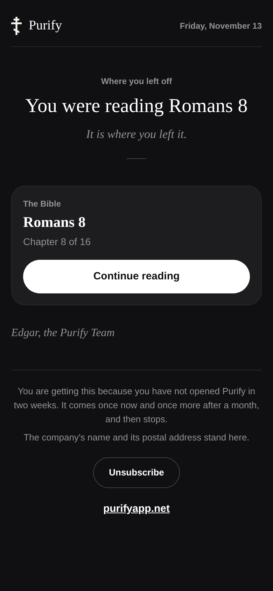
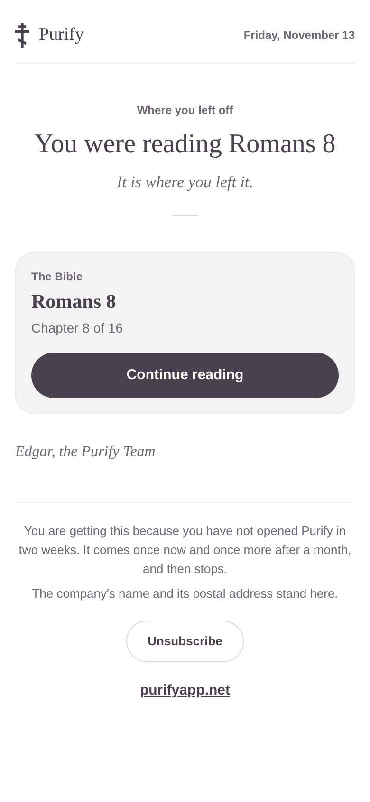
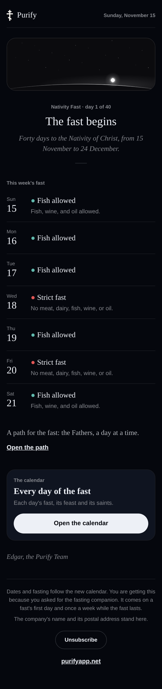
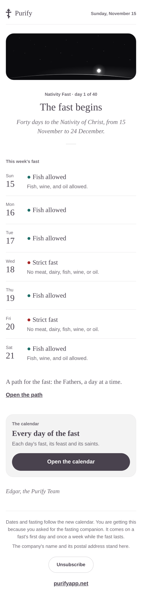
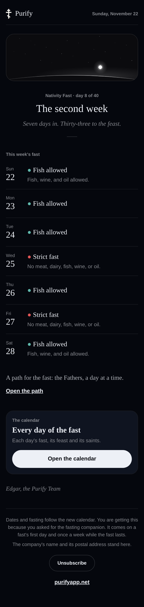

docs/brand/kit/email · 13 November 2026
Three emails that bring a reader back
The first week, where you left off, and the fasting companion. Each is one thing with one button, on the same look. Yes or no to each is yours.
The first week
Three emails for a new reader, on days 1, 3 and 7. Each names one thing to do and gives the one button that does it, on the app's own card in the app's own words. Under it, the three steps as a short leaf, with today's set heavier. Then they stop, and the foot says so.




Pick up where you left off
One personal line, as the title: the reader's own last place, or a saint they saved whose feast is near. One card, one button back to it. It says nothing else about the reader, and it is the shortest email Purify sends.


The fasting companion
For the Nativity Fast first. It opens on the fast's first day and comes once a week while the fast lasts. It wears the season: the night of the app's Nativity card, with the star higher each week. The week's fast is set day by day in the calendar's own words. It gives no counsel: how a reader keeps the fast is for their priest to say.



Why they look this way
Each choice, its reason, and what it does for the reader and for the goal, which is that a reader comes back.
One thing, one button, in each email
An email that asks for three things gets none. The card and the button are Today's own in the app.
For the reader, and for coming backThe reader knows the one step, and it is one tap away.
The step is the title, in the reader's serif
The title is what is read in the inbox and at the top of the page.
For the reader, and for coming backThe email is understood before it is opened.
The first week shows all three steps, today's set heavier
A new reader should see that it is three small things and not a course.
For the reader, and for coming backThe week has an end in sight, so the second and third emails are expected, not a surprise.
The card uses the app's own words: "Pray now", "Morning prayers", "8 min", "Begin"
The email and the screen it opens say the same thing.
For the reader, and for coming backWhat is tapped in the email is recognised at once in the app.
Pick up: the reader's own place is the title, and nothing else is said about them
One true, useful line is personal. More would feel watched.
For the reader, and for coming backThe reader is handed back exactly what they were doing.
Pick up is the shortest email Purify sends
Someone who has been away two weeks owes no reading.
For the reader, and for coming backIt takes five seconds, which is what it has.
The fasting companion wears the season: the night, the star higher each week
It is the app's own picture for the fast, and the reader email's. One fast, one look.
For the reader, and for coming backEach week's email shows the fast has moved, without a word of urging.
The week's fast day by day, in the calendar's words, with its colour and its words
"What may I eat on Wednesday" is why this email is opened again in the week. Never colour alone.
For the reader, and for coming backIt is useful every day of the week, so it is kept and returned to.
No counsel in the fasting companion
How a fast is kept is a priest's to say.
For the reader, and for coming backThe reader trusts it to say only what the calendar says.
Each foot says why it came and when it stops
A reader who knows the end does not reach for Unsubscribe.
For the reader, and for coming backThree emails, or two, or one a week for forty days: said plainly.
Phone first, dark first, a clean white where the screen is light
His words.
For the reader, and for coming backIt reads like the app, in the hand.
In the email
Token
For the reader, and for coming backFrom
The page
`--k-ground`
For the reader, and for coming backthe kit
A raised card
`--k-card`
For the reader, and for coming backthe kit
Headings
`--k-ink`
For the reader, and for coming backthe kit
Running text
`--k-ink-2` (the ink at `--k-ink-2-share`)
For the reader, and for coming backthe kit
Labels and quiet lines
`--k-ink-3` (the ink at `--k-ink-3-share`), lifted where a palette needs it to hold 4.5:1 on a card as well as the page
For the reader, and for coming backthe kit
Hairlines
`--k-line`
For the reader, and for coming backthe kit
A control's edge, the short rule
`--k-line-strong`
For the reader, and for coming backthe kit
A chart's quiet marks
the ink at the share that holds 3:1
For the reader, and for coming backthe kit's ink
The button, and its words
the ink, the ground
For the reader, and for coming backthe kit
Money in, by source
`--k-money-shop`, `--k-money-plus`, `--k-money-box`
For the reader, and for coming backthe kit
The night's ground
`--k-well` of Dark
For the reader, and for coming backthe kit
A feast's mark
`--ink-rubric`
For the reader, and for coming backthe app
Each fast
`--fast-strict`, `--fast-fish`, `--fast-wine-oil`, `--fast-free`
For the reader, and for coming backthe app
Night sky's page, card and ink
`html[data-look="nightsky"]`, at Dark's shares
For the reader, and for coming backthe app
What waits on your yes
- The designs, each of the three.
- The new words. The titles, the line under each, and each foot's sentence of why the email came are written for these emails. Everything on a card is the app's own words.
- Saving a verse. Day 7 says a saved verse is kept for the reader. That holds only if saving is free for every reader; the sending's chat confirms it before the switch goes on.
The check
Run with node docs/brand/kit/check.mjs on 13 November 2026. It passed: all six emails at 360, 390, 412 and 1032 wide, on the four dark palettes and the clean light, in Arabic's direction, the fast's two on Night sky as well. Each is under 20KB of HTML. No script, no parchment, nothing on the heritage list. Not yet seen in real Gmail, Apple Mail or Outlook.